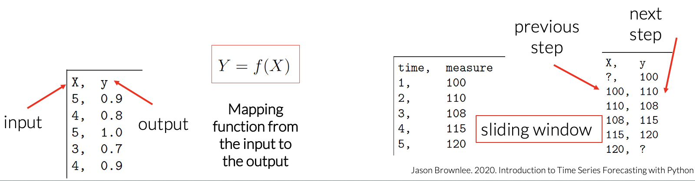
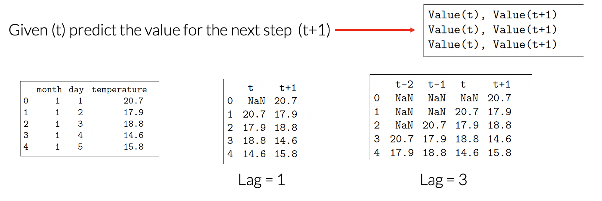
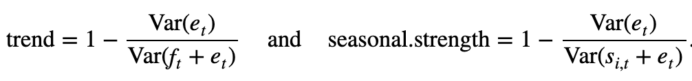

Features¶
Introduction to Time Series Forecasting with Python. Jason Brownlee.
R for Data Science. Wickham and Grolemund.
What is Feature?¶
Feature extraction is the practice of enhancing machine learning by finding characteristics in the data that help solve a particular problem. For time series data, feature extraction can be performed using various time series analysis and decomposition techniques
Forecasting as Supervised Learning¶
Time Series Analysis
The primary objective of time series analysis is to develop mathematical models that provide plausible descriptions from sample data (Shumway & Stooffer).
making assumptions about the form of the data
decomposing the time series into components (trends, seasonality, noise)
Forecasting
Forecasting involves taking models fit on historical data and using them to predict future observations.
We can use Time Series components and apply traditional statistical methods to make predictions.
Supervised Learning
The use of labeled datasets to train algorithms for classifying data or predicting outcomes accurately
Time series forecasting can be framed as a supervised learning problem.

Given a sequence of numbers for a time series dataset, we can restructure the data to look like a supervised learning problem by using sliding window:
Previous time steps are input variables and the next time step is the output variable
The order between the observations is preserved
There is no previous value to predict the first value in the sequence (it will be deleted). And no next value to predic the last one.
Features¶
Input variable = feature
We do not have input and output features in time series. Instead, we must choose the variable to be predicted and use feature engineering to construct input variables.
Time series ususally has one column - date-time attribute
Types of Features
Date Time Features
Lag Features (ACF)
Window Features
STL Features
Lag Features¶
The lag features are the target (output) variable but shifted with a period of time (a day before, a week or a month etc)

values at prior time steps
predicting the value at the next time, given the value at the current time (t)
lag features is called the sliding window method, for example (t+1) = a window width of 1
Window Features¶
a summary of values over a fixed window of prior time steps
A common short summary of a data set is to compute five summary statistics: the minimum, first quartile, median, third quartile and maximum.
Measuring the central tendency over time (mean, median)
Measuring the volatility over time (sd, var)
Detecting changes in trend (fast vs slow moving averages)
Measuring a relationship between two time series over time (cor, cov)
STL Features¶
STL (Seasonal and Trend decomposition using Loess): More robust method for decomposing time series. Seasonal component is allowed to change over time and it can be robust to outliers
Strength of trends and seasonality
For strongly trended data, the seasonally adjusted data should have much more variation than the remainder component.
For data with little or no trend: strength ~ 0
Seasonality is defined for detrended data and the remainder component
Data with no seasonality: strength ~ 0
